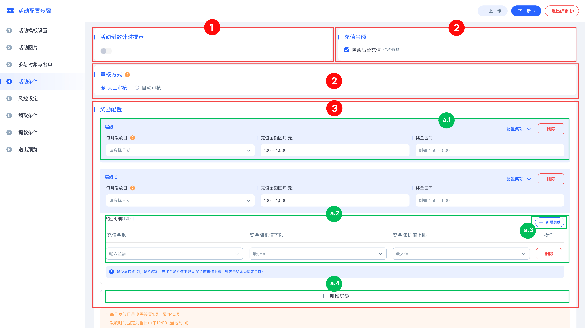

定期宝箱模板
本手册针对「活动条件」配置页面进行说明，协助管理人员设定活动的参与门槛、奖励机制及审核流程。配置共分为「全局功能设定」与「阶梯奖励详情」两大部分。

| 分类 |
设定项 |
说明与配置参数 |
二、 全局功能模块
(红色标注区域)
|
1. 活动倒计时提示 |
- 功能：控制前端页面是否显示活动剩余时间。
- 应用：开启后可增强活动的紧迫感，提升用户的转化率。
|
| 2. 基础参数设定 |
- 充值金额：勾选后，系统计算时将包含后台人工充值的金额，否则仅计算在线充值。
- 审核方式：
1. 人工审核：奖励发放需经后台管理员逐笔确认。
2. 自动审核：系统根据规则达标后立即自动发放奖励。
|
| 3. 奖励配置总览 |
- 功能：此区域为活动奖励的核心配置区，支援多层级（阶梯式）的配置方案，用以满足不同层级用户的激励需求。
|
三、 奖励细节指南
(绿色标注区域)
|
a.1 奖励层级基础参数 |
- 每月发放日：透过下拉式选单选择每月结算与奖励发放的具体日期。
- 充值金额区间(元)：设定进入该奖励层级所需的充值总额下限与上限。
- 奖金区间：定义该层级对外显示的预期奖金范围（仅供前端参考）。
- 层级管理：点击右上角「配置选项」可展开更多进阶设定，或点击「删除」移除该层级。
|
| a.2 奖励随机规则细节 |
配置逻辑：系统支援在同一层级内，根据用户不同的充值金额细分随机奖金范围。
参数填写：
- 充值金额：输入用户需达到的具体充值数值。
- 奖金随机值下限/上限：设定系统在该金额点所发放的奖金变动范围。（注：若下限与上限数值相同，则代表发放固定金额奖励。）
|
| a.3 规则增减操作 |
- 新增规则：点击「+ 新增规则」可在当前层级下扩充更多金额区段，实现更细腻的奖励梯度。
- 删除：点击每行末端的「删除」按钮即可移除特定的金额规则。
|
| a.4 扩充活动层级 |
- 新增层级：若活动设计包含多个进阶门槛（例如：初级宝箱、中级宝箱、高级宝箱），请点击此按钮以新增一组完整的层级配置模板。
|
四、 注意事项与规范
- 时间规范：系统默认奖励结算发放时间为当日中午 12:00（当地时间），配置前请务必核对时区与日期设定。
- 逻辑检查：设定多个层级时，请确保「充值金额区间」之间不具备重叠性，以免造成系统判别异常。
- 规则限额：每个发放日最少需设置 1 项规则，单个层级下最多建议设置 10 项规则。
|
Periodic Treasure Chest Template
This manual provides instructions for the "Activity Conditions" configuration page, assisting
administrators in setting participation thresholds, reward mechanisms, and approval processes. The
configuration is divided into two main parts: "Global Function Settings" and "Tiered Reward Details".
| Category |
Setting Item |
Description & Parameters |
II. Global Function
Modules
(Red Highlighted Area) |
1. Activity Countdown Prompt |
- Function: Controls whether the remaining activity time is displayed
on the frontend page.
- Application: When enabled, it enhances the urgency of the activity
and improves user conversion rates.
|
| 2. Basic Parameter Settings |
- Deposit Amount: When checked, the system calculation will include
manual deposits made by the backend; otherwise, only online deposits are calculated.
- Approval Method:
1. Manual Approval: Reward distribution requires manual
confirmation by backend administrators case by case.
2. Auto Approval: The system automatically distributes rewards
immediately after the rules are met.
|
| 3. Reward Configuration Overview |
- Function: This area is the core configuration for activity rewards.
It supports multi-level (tiered) configuration schemes to meet the incentive needs
of users at different levels.
|
III. Reward Details Guide
(Green Highlighted Area) |
a.1 Reward Tier Basic Parameters |
- Monthly Distribution Day: Select specific dates for monthly
settlement and reward distribution via the dropdown menu.
- Deposit Amount Range: Set the lower and upper limits of the total
deposit required to enter this reward tier.
- Bonus Range: Define the expected bonus range displayed externally
for this tier (for frontend reference only).
- Tier Management: Click the "Config Options" in the upper right
corner to expand advanced settings, or click "Delete" to remove this tier.
|
| a.2 Randomized Reward Rules |
Config Logic: The system supports subdividing random bonus ranges based on
different user deposit amounts within the same tier.
Parameter Entry:
- Deposit Amount: Enter the specific deposit value the user needs to
reach.
- Random Bonus Min/Max: Set the fluctuation range of the bonus
distributed by the system at that amount point. (Note: If the lower and upper bounds
are the same, it means a fixed amount reward is distributed.)
|
| a.3 Rule Add/Remove Operations |
- Add Rule: Click "+ Add Rule" to expand more amount sections under
the current tier for finer reward gradients.
- Delete: Click the "Delete" button at the end of each row to remove
a specific amount rule.
|
| a.4 Expand Activity Tiers |
- Add Tier: If the activity design includes multiple advanced
thresholds (e.g., Bronze Chest, Silver Chest, Gold Chest), click this button to add
a complete set of tier configuration templates.
|
IV. Precautions & Specifications
- Time Specification: The system's default reward settlement and
distribution time is 12:00 PM (local time) on the day. Be sure to check timezone and
date settings before configuring.
- Logic Check: When setting multiple tiers, ensure that the "Deposit
Amount Ranges" do not overlap to prevent abnormal system judgments.
- Rule Limits: At least 1 rule must be set per distribution day; a
maximum of 10 rules is recommended within a single tier.
|
Mẫu rương kho báu định kỳ
Tài liệu hướng dẫn này dành cho trang cấu hình "Điều Kiện Hoạt Động", hỗ trợ quản trị viên thiết lập
ngưỡng tham gia, cơ chế phần thưởng và quy trình phê duyệt. Cấu hình được chia thành hai phần chính:
"Cài Đặt Chức Năng Cốt Lõi" và "Chi Tiết Phần Thưởng Từng Bậc".
| Danh Mục |
Mục Thiết Lập |
Mô Tả & Thông Số |
II. Mô-đun Chức Năng Cốt
Lõi
(Khu vực màu đỏ) |
1. Nhắc Nhở Đếm Ngược |
- Chức Năng: Kiểm soát xem thời gian còn lại của hoạt động có hiển
thị trên trang giao diện hay không.
- Ứng Dụng: Khi được bật, nó có thể tăng tính cấp bách của hoạt động
và cải thiện tỷ lệ chuyển đổi của người dùng.
|
| 2. Thông Số Cơ Bản |
- Số Tiền Nạp: Khi được chọn, hệ thống sẽ bao gồm cả số tiền nạp thủ
công từ backend; nếu không, chỉ tính số tiền nạp trực tuyến.
- Phương Thức Phê Duyệt:
1. Thủ Công: Việc phân bổ phần thưởng cần sự xác nhận từng khoản từ
quản trị viên.
2. Tự Động: Hệ thống tự động phân bổ ngay sau khi đạt đủ điều kiện
của quy tắc.
|
| 3. Tổng Quan Cấu Hình Thưởng |
- Chức Năng: Đây là khu vực cốt lõi để thiết lập phần thưởng. Hỗ trợ
nhiều cấp độ (bậc thang) để đáp ứng nhu cầu khuyến khích cho các hạng người dùng
khác nhau.
|
III. Hướng Dẫn Chi Tiết
(Khu vực màu xanh) |
a.1 Thông Số Cơ Bản Của Từng Cấp |
- Ngày Phân Bổ Hàng Tháng: Chọn ngày cụ thể để quyết toán và phân bổ
thông qua danh sách thả xuống.
- Khoảng Số Tiền Nạp: Thiết lập giới hạn dưới và trên của tổng số
tiền nạp cần thiết để vào cấp độ này.
- Khoảng Tiền Thưởng: Chỉ định phạm vi tiền thưởng dự kiến hiển thị
bên ngoài cho cấp độ này (chỉ để tham khảo ở UI).
- Quản Lý Cấp Độ: Nhấp vào "Tùy Chọn Cấu Hình" ở góc trên cùng để mở
rộng các thiết lập nâng cao, hoặc "Xóa" để loại bỏ.
|
| a.2 Quy Tắc Thưởng Ngẫu Nhiên |
Logic: Hệ thống hỗ trợ chia nhỏ phạm vi tiền thưởng ngẫu nhiên dựa trên các
khoản tiền nạp khác nhau trong cùng một cấp độ.
Nhập Thông Số:
- Số Tiền Nạp: Nhập giá trị tiền nạp cụ thể mà người dùng cần đạt
được.
- Tối Thiểu/Tối Đa: Thiết lập phạm vi biến động tiền thưởng. (Lưu ý:
Nếu giới hạn dưới và trên giống nhau, nghĩa là phát thưởng cố định.)
|
| a.3 Thêm/Xóa Quy Tắc |
- Thêm Quy Tắc: Nhấp "+ Thêm Quy Tắc" để mở rộng thêm các khoảng tiền
dưới cấp độ hiện tại để có độ dốc phần thưởng tinh tế hơn.
- Xóa: Nhấp vào "Xóa" ở cuối mỗi hàng để loại bỏ quy tắc số tiền đó.
|
| a.4 Mở Rộng Cấp Độ Hoạt Động |
- Thêm Cấp Độ: Nếu thiết kế bao gồm nhiều ngưỡng cao cấp (ví dụ:
Rương Đồng, Rương Bạc, Rương Vàng), nhấp nút này để thêm một bộ cấu hình cấp độ hoàn
chỉnh.
|
IV. Lưu Ý Và Quy Định
- Quy Định Thời Gian: Thời gian quyết toán và phân bổ mặc định là
12:00 trưa (giờ địa phương) trong ngày. Vui lòng kiểm tra múi giờ và cài đặt.
- Kiểm Tra Logic: Khi thiết lập nhiều cấp độ, đảm bảo các "Khoảng
Tiền Nạp" không bị chồng chéo để tránh lỗi hệ thống.
- Giới Hạn Quy Tắc: Ít nhất 1 quy tắc phải được đặt cho mỗi ngày phát
thưởng; tối đa khuyến nghị là 10 quy tắc trong một cấp độ.
|